CODING AGENTS AS PIXEL WORLD MODELS
traex/GPT-5.6-Sol · 0175
点击播放 · 原生 RGB 像素
逐轮保存的候选
回放视频、检查图与代码变化。
每份候选均可单独播放。实际图片检查记录在下方工具轨迹中。
候选 01播放与检查图
点击播放 · 原生 RGB 像素
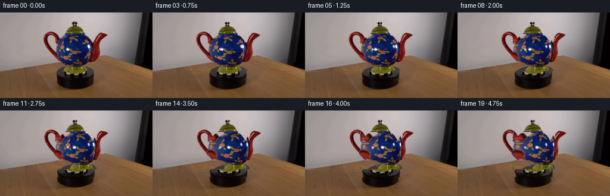
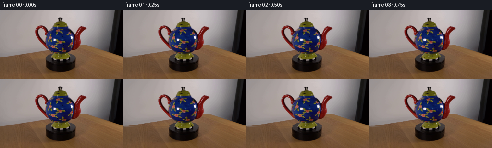
展开代码变化
--- 上一保存版本 +++ 本次保存版本 @@ -0,0 +1,169 @@ +from pathlib import Path +import cv2 +import numpy as np +from artifact_io import save + +CASE_DIR = Path(__file__).resolve().parent +N, H, W = 20, 144, 256 + +def feather(mask, radius=1.0): + m = mask.astype(np.uint8) * 255 + if radius > 0: + m = cv2.GaussianBlur(m, (0, 0), radius) + return m.astype(np.float32) / 255.0 + +def composite(dst, src, alpha): + a = alpha[..., None] + return src.astype(np.float32) * a + dst.astype(np.float32) * (1.0 - a) + +def grab_part(bgr, polygon, sure): + gc = np.zeros((H, W), np.uint8) + cv2.fillPoly(gc, [np.asarray(polygon, np.int32)], cv2.GC_PR_FGD) + gc[sure] = cv2.GC_FGD + bgd = np.zeros((1, 65), np.float64) + fgd = np.zeros((1, 65), np.float64) + cv2.grabCut(bgr, gc, None, bgd, fgd, 7, cv2.GC_INIT_WITH_MASK) + return (gc == cv2.GC_FGD) | (gc == cv2.GC_PR_FGD) + +def affine_layer(image, mask, matrix): + warped = cv2.warpAffine(image, matrix, (W, H), flags=cv2.INTER_CUBIC, + borderMode=cv2.BORDER_REFLECT_101) + a = cv2.warpAffine((feather(mask, .55) * 255).astype(np.uint8), matrix, + (W, H), flags=cv2.INTER_LINEAR, + borderMode=cv2.BORDER_CONSTANT).astype(np.float32) / 255.0 + return warped, a + +def sphere_texture(image, silhouette, angle): + """Advection of the visible ceramic texture around an analytic round body.""" + yy, xx = np.indices((H, W), dtype=np.float32) + mapx, mapy = xx.copy(), yy.copy() + valid = np.zeros((H, W), bool) + # Per-scanline bounds retain the exact photographed asymmetric silhouette. + for y in range(36, 99): + xs = np.flatnonzero(silhouette[y] & (np.arange(W) >= 91) & (np.arange(W) <= 164)) + if len(xs) < 5: + continue + left, right = float(xs.min()), float(xs.max()) + center, radius = (left + right) * .5, (right - left) * .5 + u = (xx[y] - center) / max(radius, 1.) + inside = np.abs(u) <= 1. + longitude = np.arcsin(np.clip(u, -1., 1.)) + # Clockwise turn: material on the near face progresses toward screen right. + source_u = np.sin(longitude - angle) + mapx[y] = center + radius * source_u + valid[y] = inside + tex = cv2.remap(image, mapx, mapy, cv2.INTER_CUBIC, + borderMode=cv2.BORDER_REFLECT_101) + a = feather(silhouette & valid, .65) + return tex, a + +def cylindrical_texture(image, mask, angle, strength): + yy, xx = np.indices((H, W), dtype=np.float32) + shift = strength * np.sin(angle) + mapx = (xx - shift).astype(np.float32) + warped = cv2.remap(image, mapx, yy, cv2.INTER_CUBIC, + borderMode=cv2.BORDER_REFLECT_101) + return warped, feather(mask, .55) + +def platform_top(image, angle): + """Rotate subtle top-surface highlights in ellipse-normalized coordinates.""" + yy, xx = np.indices((H, W), dtype=np.float32) + cx, cy, ry = 127.0, 104.0, 9.2 + # Rotate in coordinates where the photographed top ellipse is circular. + xn, yn = xx - cx, (yy - cy) * 3.15 + c, s = np.cos(-angle), np.sin(-angle) + sx = cx + c * xn - s * yn + sy = cy + (s * xn + c * yn) / 3.15 + wrp = cv2.remap(image, sx.astype(np.float32), sy.astype(np.float32), + cv2.INTER_CUBIC, borderMode=cv2.BORDER_REFLECT_101) + mask = ((xx-cx)/34.0)**2 + ((yy-cy)/ry)**2 <= 1.0 + return wrp, feather(mask & (yy >= 96), .55) + +def main(): + rgb = cv2.cvtColor(cv2.imread(str(CASE_DIR / 'first_frame.png'), cv2.IMREAD_COLOR), + cv2.COLOR_BGR2RGB) + bgr = cv2.cvtColor(rgb, cv2.COLOR_RGB2BGR) + hsv = cv2.cvtColor(bgr, cv2.COLOR_BGR2HSV) + yy, xx = np.indices((H, W)) + sat = hsv[..., 1] + + # Main teapot silhouette (knob, lid, blue bowl, and green foot), excluding red appendages. + body_poly = [(93,43),(100,31),(116,26),(120,18),(130,16),(136,27), + (151,32),(161,49),(163,78),(155,96),(153,106),(143,112), + (106,112),(98,104),(98,96),(91,79)] + blue_green = ((sat > 55) & (xx > 92) & (xx < 164) & (yy > 25) & (yy < 112)) + dark_core = (xx > 116) & (xx < 138) & (yy > 15) & (yy < 31) & (bgr.mean(2) < 95) + body = grab_part(bgr, body_poly, blue_green | dark_core) + body &= ~((yy >= 105) & (sat < 70)) # do not absorb the black turntable + + # Red handle and spout. Tight polygons prevent the similarly warm tabletop joining them. + red = (sat > 72) & (bgr[...,2] > 45) & (bgr[...,2] > bgr[...,1] * 1.12) + left_poly = [(70,39),(77,30),(90,31),(101,42),(106,57),(105,79), + (101,97),(94,94),(84,81),(76,64),(70,51)] + right_poly = [(146,51),(154,40),(166,32),(181,32),(177,40),(170,49), + (169,67),(164,85),(156,96),(148,94)] + handle = grab_part(bgr, left_poly, red & (xx < 108) & (yy < 99)) + spout = grab_part(bgr, right_poly, red & (xx > 145) & (yy < 98)) + + # Split masks by material/geometry for stable silhouettes and independently moving texture. + bowl = body & (yy >= 35) & (yy <= 99) + lid = body & (yy >= 14) & (yy < 47) + foot = body & (yy >= 92) & (yy <= 112) + whole_pot = body | handle | spout + + # Recover the tiny background slivers revealed as appendages move. This stays behind all parts. + hole = cv2.dilate(whole_pot.astype(np.uint8) * 255, np.ones((5,5), np.uint8), 2) + clean_bg = cv2.inpaint(rgb, hole, 5, cv2.INPAINT_TELEA) + + frames = [] + for i in range(N): + if i == 0: + frames.append(rgb.copy()) + continue + # 34 degrees over the shot: plainly visible but still a slow demonstration turn. + ease = i / (N - 1) + angle = np.deg2rad(34.0) * ease + out = clean_bg.astype(np.float32) + + # Platform remains centered; only its top highlights rotate. + ptex, pa = platform_top(rgb, angle) + # Keep this under the pot but over the reconstructed background. + out = composite(out, ptex, pa) + + # Clockwise motion sends the left handle toward the far side (narrower), while the + # right spout comes modestly toward the viewer (slightly fuller). + cs = np.cos(angle) + handle_scale = .72 + .28 * cs + hm = np.array([[handle_scale, 0, 103.0 * (1-handle_scale) + 1.8*np.sin(angle)], + [0, 1, -0.3*np.sin(angle)]], np.float32) + spout_scale = 1.0 + .13*np.sin(angle) + sm = np.array([[spout_scale, 0, 151.0 * (1-spout_scale) + .7*np.sin(angle)], + [0, 1, .25*np.sin(angle)]], np.float32) + htex, ha = affine_layer(rgb, handle, hm) + stex, sa = affine_layer(rgb, spout, sm) + # Both attachments pass behind the round ceramic body. + out = composite(out, htex, ha) + out = composite(out, stex, sa) + + # Rotate lid/pedestal decoration cylindrically, then the spherical floral bowl. + ltex, la = cylindrical_texture(rgb, lid, angle, 3.0) + ftex, fa = cylindrical_texture(rgb, foot, angle, 4.0) + out = composite(out, ltex, la) + out = composite(out, ftex, fa) + btex, ba = sphere_texture(rgb, bowl, angle) + out = composite(out, btex, ba) + + # Preserve fixed studio-light glints: specular reflection does not rotate with the clay. + gray = cv2.cvtColor(rgb, cv2.COLOR_RGB2GRAY) + glint = (gray > 204) & bowl & (sat < 95) + ga = feather(glint, .65) * .82 + out = composite(out, rgb, ga) + frames.append(np.clip(out, 0, 255).astype(np.uint8)) + + arr = np.stack(frames).astype(np.uint8) + assert arr.shape == (20, 144, 256, 3) + assert np.array_equal(arr[0], rgb) + save(arr, CASE_DIR) + +if __name__ == '__main__': + main()
候选 02播放与检查图
点击播放 · 原生 RGB 像素

展开代码变化
--- 上一保存版本
+++ 本次保存版本
@@ -48,9 +48,11 @@
u = (xx[y] - center) / max(radius, 1.)
inside = np.abs(u) <= 1.
longitude = np.arcsin(np.clip(u, -1., 1.))
- # Clockwise turn: material on the near face progresses toward screen right.
- source_u = np.sin(longitude - angle)
- mapx[y] = center + radius * source_u
+ # Image-based turn. A restrained displacement preserves the photographed
+ # flowers instead of exposing unobserved (and therefore smeared) back texture.
+ # Material on the visible face moves toward screen right for a clockwise turn.
+ falloff = np.clip(1.0 - u*u, 0.0, 1.0)
+ mapx[y] = xx[y] - 13.0 * np.sin(angle) * falloff
valid[y] = inside
tex = cv2.remap(image, mapx, mapy, cv2.INTER_CUBIC,
borderMode=cv2.BORDER_REFLECT_101)
@@ -120,10 +122,12 @@
if i == 0:
frames.append(rgb.copy())
continue
- # 34 degrees over the shot: plainly visible but still a slow demonstration turn.
+ # 28 degrees over the shot: plainly visible but still a slow demonstration turn.
ease = i / (N - 1)
- angle = np.deg2rad(34.0) * ease
- out = clean_bg.astype(np.float32)
+ angle = np.deg2rad(28.0) * ease
+ # Preserve the locked-off photographed scene. Moving foreground layers overwrite
+ # only narrow strips; inpainted background is used solely in revealed slivers.
+ out = rgb.astype(np.float32)
# Platform remains centered; only its top highlights rotate.
ptex, pa = platform_top(rgb, angle)
@@ -133,10 +137,10 @@
# Clockwise motion sends the left handle toward the far side (narrower), while the
# right spout comes modestly toward the viewer (slightly fuller).
cs = np.cos(angle)
- handle_scale = .72 + .28 * cs
+ handle_scale = .86 + .14 * cs
hm = np.array([[handle_scale, 0, 103.0 * (1-handle_scale) + 1.8*np.sin(angle)],
[0, 1, -0.3*np.sin(angle)]], np.float32)
- spout_scale = 1.0 + .13*np.sin(angle)
+ spout_scale = 1.0 + .07*np.sin(angle)
sm = np.array([[spout_scale, 0, 151.0 * (1-spout_scale) + .7*np.sin(angle)],
[0, 1, .25*np.sin(angle)]], np.float32)
htex, ha = affine_layer(rgb, handle, hm)
可观测工具轨迹
实际执行的命令与返回图片。
命令 1exit 0
/bin/bash -lc "cat prompt.txt && printf '\\n--- GENERATION_RULES ---\\n' && cat GENERATION_RULES.md"
命令 2exit 1
/bin/bash -lc "find . -maxdepth 2 -type f -printf '%p\\n' | sort && printf '\\n--- tools ---\\n' && command -v ffmpeg && command -v python3 && python3 - <<'PY' import importlib.util for x in ['cv2','PIL','numpy','imageio']: print(x, bool(importlib.util.find_spec(x))) PY"
命令 3exit 0
/bin/bash -lc "python3 - <<'PY'
from PIL import Image
import numpy as np
im=Image.open('first_frame.png')
print(im.mode, im.size, np.asarray(im).shape, np.asarray(im).dtype)
for x in ['cv2','PIL','numpy','imageio','scipy','skimage']:
import importlib.util; print(x, bool(importlib.util.find_spec(x)))
PY"命令 4exit 0
/bin/bash -lc "sed -n '1,240p' artifact_io.py && printf '\\n--- command paths ---\\n'; for x in ffmpeg convert magick; do command -v \""'$x" || true; done'
命令 5exit 0
/bin/bash -lc "cat > .tmp/test_masks.py <<'PY'
import cv2, numpy as np
from PIL import Image
im=cv2.imread('first_frame.png'); h,w=im.shape[:2]
hsv=cv2.cvtColor(im,cv2.COLOR_BGR2HSV); sat=hsv[:,:,1]; val=hsv[:,:,2]
def grab(poly, fgseed, it=5):
gc=np.zeros((h,w),np.uint8)
cv2.fillPoly(gc,[np.array(poly,np.int32)],cv2.GC_PR_FGD)
# erode poly core perhaps
seed=fgseed
gc[seed]=cv2.GC_FGD
bg=np.ones((h,w),bool); cv2.fillPoly(bg.astype(np.uint8),[np.array(poly,np.int32)],0)
# already bg outside poly
bgd=np.zeros((1,65),np.float64); fgd=np.zeros((1,65),np.float64)
cv2.grabCut(im,gc,None,bgd,fgd,it,cv2.GC_INIT_WITH_MASK)
return ((gc==1)|(gc==3)).astype(np.uint8)*255
Y,X=np.mgrid[:h,:w]
bodypoly=[(96,40),(102,31),(115,27),(142,28),(154,38),(161,61),(157,87),(147,99),(112,102),(99,89),(94,60)]
seed=((sat>75)&(X>96)&(X<159)&(Y>30)&(Y<101))|((im[:,:,0]>60)&(im[:,:,0]>im[:,:,2]*1.25)&(X>98)&(X<157)&(Y>37)&(Y<97))
body=grab(bodypoly,seed)
# direct red alpha masks then morph
red=((sat>70)&(im[:,:,2]>55)&(im[:,:,2]>im[:,:,1]*1.22)&(Y<96))
left=red&(X>=72)&(X<=109)&(Y>=30)&(Y<=94)
right=red&(X>=146)&(X<=183)&(Y>=31)&(Y<=91)
# connected labels / dilation to edge
lm=(left.astype(np.uint8)*255); rm=(right.astype(np.uint8)*255)
# gather connected mask then dilate antialias manually
for name,m in [('body',body),('left',lm),('right',rm)]:
ov=im.copy(); ov[m==0]=(ov[m==0]*.25).astype(np.uint8); cv2.imwrite('.tmp/'+name+'.png',ov)
cv2.imwrite('.tmp/'+name+'_mask.png',m)
# montage
rgb=cv2.cvtColor(np.hstack([im, cv2.imread('.tmp/body.png'),cv2.imread('.tmp/left.png'),cv2.imread('.tmp/right.png')]),cv2.COLOR_BGR2RGB)
Image.fromarray(rgb).save('.tmp/montage.png')
PY
python3 .tmp/test_masks.py"命令 6exit 0
/bin/bash -lc "python3 - <<'PY'
from PIL import Image
Image.open('first_frame.png').crop((64,10,192,125)).resize((768,690)).save('.tmp/crop.png')
PY"命令 7exit 0
/bin/bash -lc "cat > .tmp/gc_parts.py <<'PY'
import cv2, numpy as np
from PIL import Image
im=cv2.imread('first_frame.png'); H,W=im.shape[:2]; hsv=cv2.cvtColor(im,cv2.COLOR_BGR2HSV); X,Y=np.meshgrid(np.arange(W),np.arange(H)); sat=hsv[:,:,1]
def run(poly, seed):
gc=np.zeros((H,W),np.uint8); cv2.fillPoly(gc,[np.array(poly,np.int32)],cv2.GC_PR_FGD); gc[seed]=cv2.GC_FGD
bgd=np.zeros((1,65),float);fgd=np.zeros((1,65),float); cv2.grabCut(im,gc,None,bgd,fgd,8,cv2.GC_INIT_WITH_MASK)
return np.where((gc==1)|(gc==3),255,0).astype('uint8')
red=(sat>70)&(im[:,:,2]>45)&(im[:,:,2]>im[:,:,1]*1.15)
l=run([(68,28),(99,28),(111,48),(110,94),(101,99),(89,83),(75,64),(68,45)],red&(X<108)&(X>70)&(Y<96))
r=run([(146,31),(184,26),(187,56),(175,75),(164,94),(146,99)],red&(X>147)&(X<184)&(Y<97))
# alpha feather
for n,m in [('lgc',l),('rgc',r)]:
cv2.imwrite('.tmp/'+n+'_mask.png',m)
ov=im.copy(); ov[m==0]=(ov[m==0]*.25).astype(np.uint8); cv2.imwrite('.tmp/'+n+'.png',ov)
Image.fromarray(cv2.cvtColor(np.hstack([im,cv2.imread('.tmp/lgc.png'),cv2.imread('.tmp/rgc.png')]),cv2.COLOR_BGR2RGB)).save('.tmp/gcparts.png')
PY
python3 .tmp/gc_parts.py"命令 8exit 0
/bin/bash -lc "cat > .tmp/proto.py <<'PY'
import cv2,numpy as np
from PIL import Image
im=cv2.imread('first_frame.png'); H,W=im.shape[:2]
# masks from test scripts
body=cv2.imread('.tmp/body_mask.png',0); lm=cv2.imread('.tmp/lgc_mask.png',0); rm=cv2.imread('.tmp/rgc_mask.png',0)
# lid/base are body included likely. Include all non-background central: Body grab mask.
def alpha(m):
m=cv2.dilate(m,np.ones((3,3),np.uint8)); return cv2.GaussianBlur(m,(3,3),.6).astype(float)/255
# inpaint background behind teapot whole silhouette
whole=np.maximum.reduce([body,lm,rm]); whole=cv2.dilate(whole,np.ones((7,7),np.uint8),iterations=2)
bg=cv2.inpaint(im,whole,5,cv2.INPAINT_TELEA)
# improve bg wood region? leave.
# composite function scaled x around axis
axis=128
def warp_layer(src,mask,s, shiftx=0):
M=np.array([[s,0,axis*(1-s)+shiftx],[0,1,0]],np.float32)
wa=cv2.warpAffine((alpha(mask)*255).astype('uint8'),M,(W,H),flags=cv2.INTER_LINEAR)
wi=cv2.warpAffine(src,M,(W,H),flags=cv2.INTER_LINEAR,borderMode=cv2.BORDER_REPLICATE)
return wi,wa.astype(float)/255
for t in [0,.125,.25,.375,.5,.625,.75,.875]:
th=2*np.pi*t
# body width projected slight; texture cheated affine shift opposite direction
s=.94 + .06*abs(np.cos(th))
out=bg.copy().astype(float)
# back handle/spout depending: draw first
# x placements compress and pass sides. Scale handles horizontal widths based perspective
# handle attached rear. red layers orbit offsets tiny
order=[]
if np.sin(th)>=0: order=[('r',rm),('l',lm),('b',body)] # hmm body on top all means both behind
else: order=[('l',lm),('r',rm),('b',body)]
# better both red first always
for name,m in order:
if name=='b': ss=s; sh=5*np.sin(th)
elif name=='l': ss=max(.3,abs(np.cos(th))); sh=27*np.sin(th)
else: ss=max(.3,abs(np.cos(th))); sh=-27*np.sin(th)
wi,a=warp_layer(im,m,ss,sh)
out=wi*a[...,None]+out*(1-a[...,None])
cv2.imwrite(f'.tmp/p{int(t*1000):03}.png',out.astype('uint8'))
Image.fromarray(cv2.cvtColor(np.hstack([cv2.imread(f'.tmp/p{int(t*1000):03}.png') for t in [0,.125,.25,.375,.5,.625,.75,.875]]),cv2.COLOR_BGR2RGB)).save('.tmp/proto.png')
PY
python3 .tmp/proto.py"命令 9exit 0
/bin/bash -lc "cat > .tmp/sphere.py <<'PY'
import cv2,numpy as np
from PIL import Image
im=cv2.imread('first_frame.png'); H,W=im.shape[:2]
body=cv2.imread('.tmp/body_mask.png',0)>0
# Map image pixels of body with approximate sphere horizontal rotation via texture sampling
# center 127,66, rx34 at mid, vertical body includes 33-101. Different radii per y from mask extents.
ys=[]; left={};right={}
for y in range(H):
xs=np.where(body[y])[0]
# restrict main central x; masks maybe lid/base
xs=xs[(xs>=92)&(xs<=163)]
if len(xs):left[y],right[y]=xs.min(),xs.max()
for angle in [0,.2,.4,.6,.8,1.0]:
mapx=np.indices((H,W))[1].astype(np.float32); mapy=np.indices((H,W))[0].astype(np.float32)
valid=np.zeros((H,W),bool)
for y in range(37,98):
if y not in left:continue
c=(left[y]+right[y])/2; r=(right[y]-left[y])/2
if r<2:continue
xs=np.arange(W); u=(xs-c)/r; ok=np.abs(u)<=1
# longitude visible, sample longitude shifted and remap to x
lon=np.arcsin(np.clip(u,-1,1)); srcu=np.sin(lon-angle)
mapx[y]=c+r*srcu; valid[y]=ok
# Remap and mask body original output on body silhouette
wr=cv2.remap(im,mapx,mapy,cv2.INTER_LINEAR,borderMode=cv2.BORDER_REFLECT)
out=im.copy(); sel=body&valid;out[sel]=wr[sel]
cv2.imwrite(f'.tmp/s{int(angle*100):03}.png',out)
Image.fromarray(cv2.cvtColor(np.hstack([cv2.imread(f'.tmp/s{int(a*100):03}.png') for a in [0,.2,.4,.6,.8,1.]]),cv2.COLOR_BGR2RGB)).save('.tmp/sphere.png')
PY
python3 .tmp/sphere.py"命令 10exit 1
/bin/bash -lc "cat > generate.py <<'PY'
from pathlib import Path
import cv2
import numpy as np
from artifact_io import save
CASE_DIR = Path(__file__).resolve().parent
N, H, W = 20, 144, 256
def feather(mask, radius=1.0):
m = mask.astype(np.uint8) * 255
if radius > 0:
m = cv2.GaussianBlur(m, (0, 0), radius)
return m.astype(np.float32) / 255.0
def composite(dst, src, alpha):
a = alpha[..., None]
return src.astype(np.float32) * a + dst.astype(np.float32) * (1.0 - a)
def grab_part(bgr, polygon, sure):
gc = np.zeros((H, W), np.uint8)
cv2.fillPoly(gc, [np.asarray(polygon, np.int32)], cv2.GC_PR_FGD)
gc[sure] = cv2.GC_FGD
bgd = np.zeros((1, 65), np.float64)
fgd = np.zeros((1, 65), np.float64)
cv2.grabCut(bgr, gc, None, bgd, fgd, 7, cv2.GC_INIT_WITH_MASK)
return (gc == cv2.GC_FGD) | (gc == cv2.GC_PR_FGD)
def affine_layer(image, mask, matrix):
warped = cv2.warpAffine(image, matrix, (W, H), flags=cv2.INTER_CUBIC,
borderMode=cv2.BORDER_REFLECT_101)
a = cv2.warpAffine((feather(mask, .55) * 255).astype(np.uint8), matrix,
(W, H), flags=cv2.INTER_LINEAR,
borderMode=cv2.BORDER_CONSTANT).astype(np.float32) / 255.0
return warped, a
def sphere_texture(image, silhouette, angle):
\"\"\"Advection of the visible ceramic texture around an analytic round body.\"\"\"
yy, xx = np.indices((H, W), dtype=np.float32)
mapx, mapy = xx.copy(), yy.copy()
valid = np.zeros((H, W), bool)
# Per-scanline bounds retain the exact photographed asymmetric silhouette.
for y in range(36, 99):
xs = np.flatnonzero(silhouette[y] & (np.arange(W) >= 91) & (np.arange(W) <= 164))
if len(xs) < 5:
continue
left, right = float(xs.min()), float(xs.max())
center, radius = (left + right) * .5, (right - left) * .5
u = (xx[y] - center) / max(radius, 1.)
inside = np.abs(u) <= 1.
longitude = np.arcsin(np.clip(u, -1., 1.))
# Clockwise turn: material on the near face progresses toward screen right.
source_u = np.sin(longitude - angle)
mapx[y] = center + radius * source_u
valid[y] = inside
tex = cv2.remap(image, mapx, mapy, cv2.INTER_CUBIC,
borderMode=cv2.BORDER_REFLECT_101)
a = feather(silhouette & valid, .65)
return tex, a
def cylindrical_texture(image, mask, angle, strength):
yy, xx = np.indices((H, W), dtype=np.float32)
shift = strength * np.sin(angle)
mapx = xx - shift
warped = cv2.remap(image, mapx, yy, cv2.INTER_CUBIC,
borderMode=cv2.BORDER_REFLECT_101)
return warped, feather(mask, .55)
def platform_top(image, angle):
\"\"\"Rotate subtle top-surface highlights in ellipse-normalized coordinates.\"\"\"
yy, xx = np.indices((H, W), dtype=np.float32)
cx, cy, ry = 127.0, 104.0, 9.2
# Rotate in coordinates where the photographed top ellipse is circular.
xn, yn = xx - cx, (yy - cy) * 3.15
c, s = np.cos(-angle), np.sin(-angle)
sx = cx + c * xn - s * yn
sy = cy + (s * xn + c * yn) / 3.15
wrp = cv2.remap(image, sx.astype(np.float32), sy.astype(np.float32),
cv2.INTER_CUBIC, borderMode=cv2.BORDER_REFLECT_101)
mask = ((xx-cx)/34.0)**2 + ((yy-cy)/ry)**2 <= 1.0
return wrp, feather(mask & (yy >= 96), .55)
def main():
rgb = cv2.cvtColor(cv2.imread(str(CASE_DIR / 'first_frame.png'), cv2.IMREAD_COLOR),
cv2.COLOR_BGR2RGB)
bgr = cv2.cvtColor(rgb, cv2.COLOR_RGB2BGR)
hsv = cv2.cvtColor(bgr, cv2.COLOR_BGR2HSV)
yy, xx = np.indices((H, W))
sat = hsv[..., 1]
# Main teapot silhouette (knob, lid, blue bowl, and green foot), excluding red appendages.
body_poly = [(93,43),(100,31),(116,26),(120,18),(130,16),(136,27),
(151,32),(161,49),(163,78),(155,96),(153,106),(143,112),
(106,112),(98,104),(98,96),(91,79)]
blue_green = ((sat > 55) & (xx > 92) & (xx < 164) & (yy > 25) & (yy < 112))
dark_core = (xx > 116) & (xx < 138) & (yy > 15) & (yy < 31) & (bgr.mean(2) < 95)
body = grab_part(bgr, body_poly, blue_green | dark_core)
body &= ~((yy >= 105) & (sat < 70)) # do not absorb the black turntable
# Red handle and spout. Tight polygons prevent the similarly warm tabletop joining them.
red = (sat > 72) & (bgr[...,2] > 45) & (bgr[...,2] > bgr[...,1] * 1.12)
left_poly = [(70,39),(77,30),(90,31),(101,42),(106,57),(105,79),
(101,97),(94,94),(84,81),(76,64),(70,51)]
right_poly = [(146,51),(154,40),(166,32),(181,32),(177,40),(170,49),
(169,67),(164,85),(156,96),(148,94)]
handle = grab_part(bgr, left_poly, red & (xx < 108) & (yy < 99))
spout = grab_part(bgr, right_poly, red & (xx > 145) & (yy < 98))
# Split masks by material/geometry for stable silhouettes and independently moving texture.
bowl = body & (yy >= 35) & (yy <= 99)
lid = body & (yy >= 14) & (yy < 47)
foot = body & (yy >= 92) & (yy <= 112)
whole_pot = body | handle | spout
# Recover the tiny background slivers revealed as appendages move. This stays behind all parts.
hole = cv2.dilate(whole_pot.astype(np.uint8) * 255, np.ones((5,5), np.uint8), 2)
clean_bg = cv2.inpaint(rgb, hole, 5, cv2.INPAINT_TELEA)
frames = []
for i in range(N):
if i == 0:
frames.append(rgb.copy())
continue
# 34 degrees over the shot: plainly visible but still a slow demonstration turn.
ease = i / (N - 1)
angle = np.deg2rad(34.0) * ease
out = clean_bg.astype(np.float32)
# Platform remains centered; only its top highlights rotate.
ptex, pa = platform_top(rgb, angle)
# Keep this under the pot but over the reconstructed background.
out = composite(out, ptex, pa)
# Clockwise motion sends the left handle toward the far side (narrower), while the
# right spout comes modestly toward the viewer (slightly fuller).
cs = np.cos(angle)
handle_scale = .72 + .28 * cs
hm = np.array([[handle_scale, 0, 103.0 * (1-handle_scale) + 1.8*np.sin(angle)],
[0, 1, -0.3*np.sin(angle)]], np.float32)
spout_scale = 1.0 + .13*np.sin(angle)
sm = np.array([[spout_scale, 0, 151.0 * (1-spout_scale) + .7*np.sin(angle)],
[0, 1, .25*np.sin(angle)]], np.float32)
htex, ha = affine_layer(rgb, handle, hm)
stex, sa = affine_layer(rgb, spout, sm)
# Both attachments pass behind the round ceramic body.
out = composite(out, htex, ha)
out = composite(out, stex, sa)
# Rotate lid/pedestal decoration cylindrically, then the spherical floral bowl.
ltex, la = cylindrical_texture(rgb, lid, angle, 3.0)
ftex, fa = cylindrical_texture(rgb, foot, angle, 4.0)
out = composite(out, ltex, la)
out = composite(out, ftex, fa)
btex, ba = sphere_texture(rgb, bowl, angle)
out = composite(out, btex, ba)
# Preserve fixed studio-light glints: specular reflection does not rotate with the clay.
gray = cv2.cvtColor(rgb, cv2.COLOR_RGB2GRAY)
glint = (gray > 204) & bowl & (sat < 95)
ga = feather(glint, .65) * .82
out = composite(out, rgb, ga)
frames.append(np.clip(out, 0, 255).astype(np.uint8))
arr = np.stack(frames).astype(np.uint8)
assert arr.shape == (20, 144, 256, 3)
assert np.array_equal(arr[0], rgb)
save(arr, CASE_DIR)
if __name__ == '__main__':
main()
PY
python3 generate.py
python3 - <<'PY'
import numpy as np
from PIL import Image
z=np.load('pixels.npz')['pixels']
print('pixels', z.shape, z.dtype)
a=np.asarray(Image.open('first_frame.png')); b=np.asarray(Image.open('frames/00.png'))
print('frame00 exact:',np.array_equal(a,b),'maxdiff',np.max(np.abs(a.astype(int)-b.astype(int))))
print('outputs:',len(list(__import__('pathlib').Path('frames').glob('*.png'))))
PY"命令 11exit 0
/bin/bash -lc "python3 generate.py && python3 - <<'PY'
import numpy as np
from PIL import Image
from pathlib import Path
z=np.load('pixels.npz')['pixels']
a=np.asarray(Image.open('first_frame.png')); b=np.asarray(Image.open('frames/00.png'))
print('pixels',z.shape,z.dtype,'frame00_exact',np.array_equal(a,b),'frames',len(list(Path('frames').glob('*.png'))))
PY"命令 12exit 0
/bin/bash -lc "python3 generate.py && python3 - <<'PY'
import numpy as np
from PIL import Image
from pathlib import Path
ims=[np.asarray(Image.open(f'frames/{i:02}.png')) for i in range(20)]
print('shape',np.stack(ims).shape,'dtype',ims[0].dtype,'first exact',np.array_equal(ims[0],np.asarray(Image.open('first_frame.png'))))
print('changed pixels final',np.count_nonzero(np.any(ims[-1]"'!=ims[0],axis=2)))
PY'命令 13exit 0
/bin/bash -lc "python3 - <<'PY'
import cv2, numpy as np
ims=[cv2.imread(f'frames/{i:02}.png') for i in range(20)]
for i in range(1,20):
d=np.abs(ims[i].astype(np.int16)-ims[i-1].astype(np.int16))
print(i, round(float(d.mean()),3), int(d.max()), int(np.count_nonzero(np.any(d>0,axis=2))))
PY
ls -lh generate.py pixels.npz index.html inspection.png"视觉工具实际返回图片 1
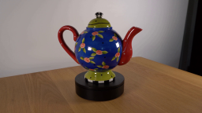
视觉工具实际返回图片 2
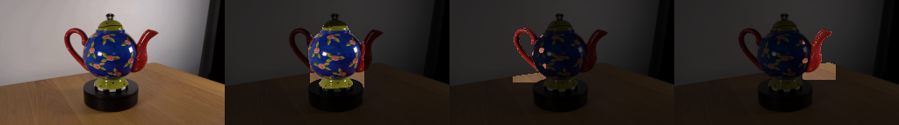
视觉工具实际返回图片 3
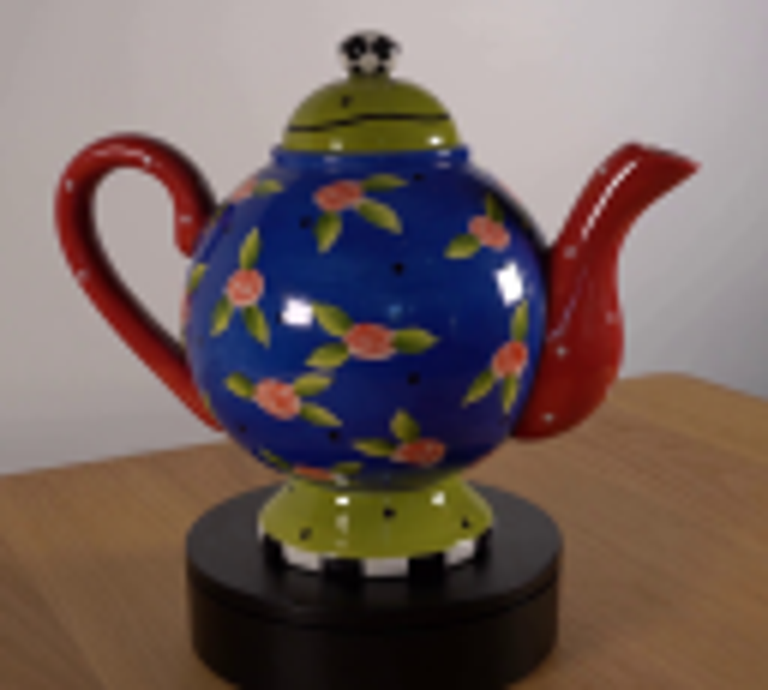
视觉工具实际返回图片 4
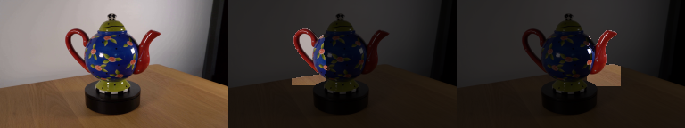
视觉工具实际返回图片 5
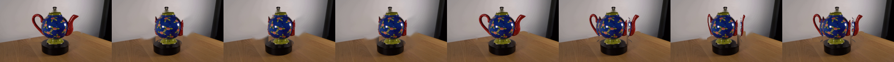
视觉工具实际返回图片 6
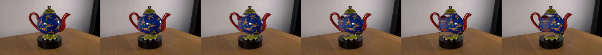
视觉工具实际返回图片 7

视觉工具实际返回图片 8
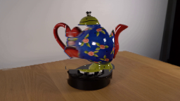
视觉工具实际返回图片 9
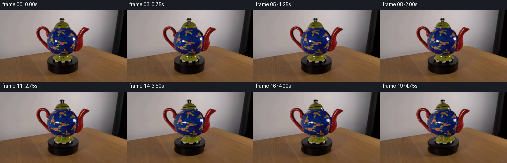
视觉工具实际返回图片 10
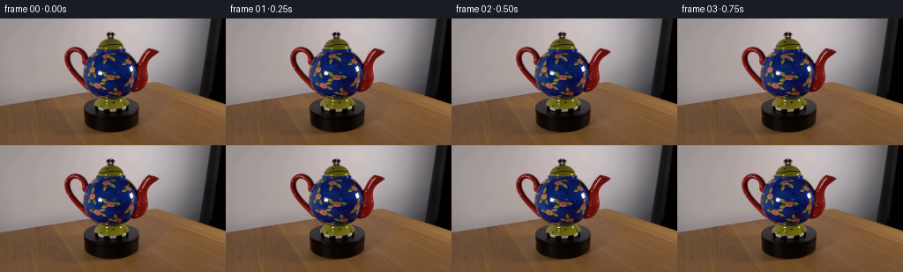
保存候选 2 份；完成命令 13 次；可验证图片返回 10 张。原始 API 响应与完整日志保留在本地。